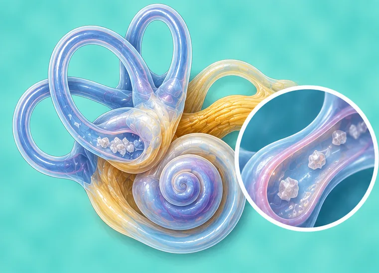

Ear-related vertigo (spinning dizziness)
Spinning dizziness that starts from a problem in the inner ear
What it is
The inner ear helps keep our balance. When it is upset, the room or the person can feel as if it is spinning, sometimes with sickness or ringing in the ear.
- Inner ear
- Can happen at any age
- Room feels like spinning
- Which doctor
- Ear, nose and throat doctor (ENT), family doctor
- Common in
- Adults of any age; more often in middle age and older
- Contagious
- No
- Course
- Spells can last minutes to days; a doctor can find the cause
Common signs

Room feels like spinningVertigo 
Feeling sick, nauseaNausea 
Ringing in the earsTinnitus 
Hard to hear peopleHearing loss 
Unsteady when walkingUnsteady gait
Why it happens

Germs (infection)Infectious cause 
A fall, knock or road accidentTrauma 
The cause is not fully knownIdiopathic
Other causes
- Too much fluid pressure in the inner ear
- Tiny crystals in the inner ear out of place
See a doctor first if
- Dizziness with face drooping, arm weakness or speech trouble: call 999
- A sudden, very bad headache, double vision, fainting or trouble walking: go to hospital now
- Chest pain, a racing heart or trouble breathing with dizziness
- Sudden hearing loss in one ear
- Spells that keep coming back or are getting worse
If any apply, please see a doctor before a session.
This page is general information. Please keep taking your normal medicine and keep seeing your doctor.
Keep taking your normal medicine and keep seeing your doctor. Our session is a gentle support and does not replace medical care.
Looking after yourself

Eat less saltLow-salt diet 
Ask your pharmacistPharmacist advice
More ways to look after yourself
- Sit or lie down at once when a spell starts, and keep your eyes on one still spot
- Move slowly and avoid sudden head turns
- Do not drive or climb ladders while you feel dizzy
Tell your therapist
- Dizzy when turning the head
- Recent neck injury or surgery
- A heart condition
- High blood pressure
- Blood-thinning medicine
- Pregnancy
Your therapist will go through this with you before starting.
Questions and answers
What is Ear-related vertigo (spinning dizziness)?
Spinning dizziness that starts from a problem in the inner ear. The inner ear helps keep our balance. When it is upset, the room or the person can feel as if it is spinning, sometimes with sickness or ringing in the ear.
What are the common signs of Ear-related vertigo (spinning dizziness)?
Room feels like spinning · Feeling sick, nausea · Ringing in the ears · Hard to hear people · Unsteady when walking
Why does Ear-related vertigo (spinning dizziness) happen?
Germs (infection) · A fall, knock or road accident · The cause is not fully known
How can I look after myself with Ear-related vertigo (spinning dizziness)?
Eat less salt · Ask your pharmacist
Can an AI Body Master session help with Ear-related vertigo (spinning dizziness)?
A session is gentle, needle-free meridian support for your wellbeing. It does not treat or cure Ear-related vertigo (spinning dizziness) and never replaces your medicine or your doctor. Tell your therapist about it before the session starts.
Related conditions
References: General information based on public health sources such as Mayo Clinic, NHS, Cleveland Clinic and NCBI StatPearls.
Page updated: 2026-11-01